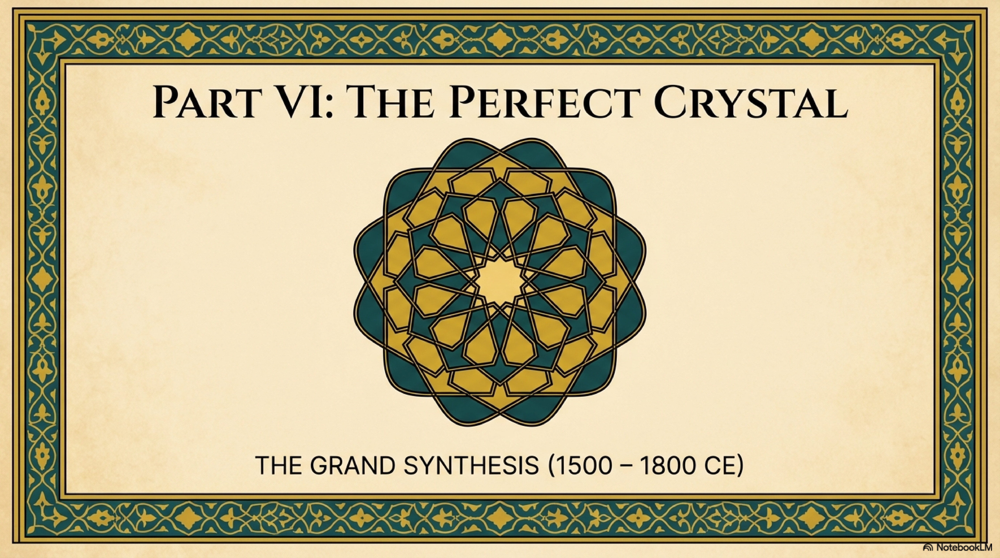
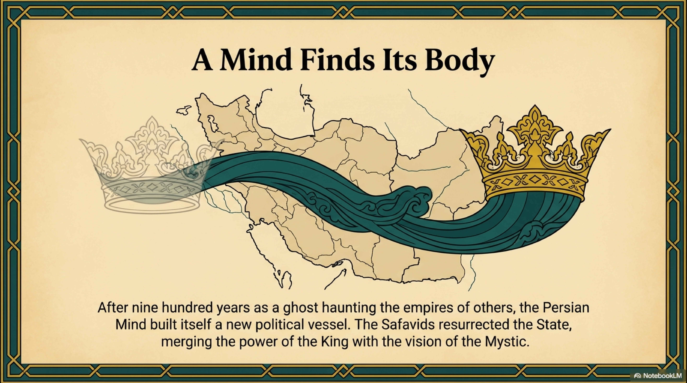
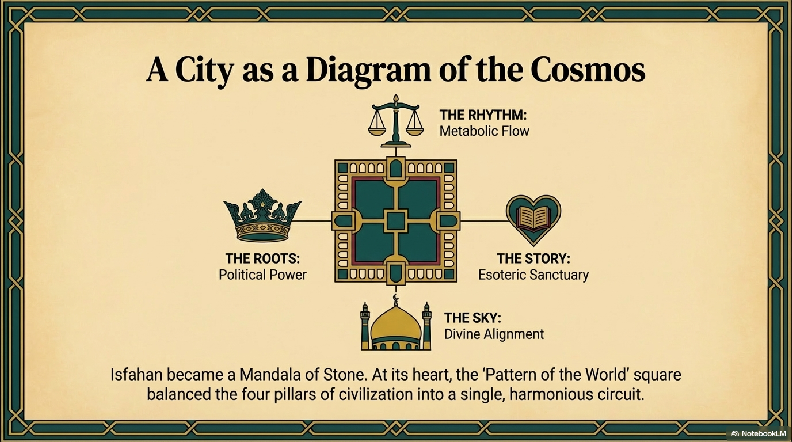
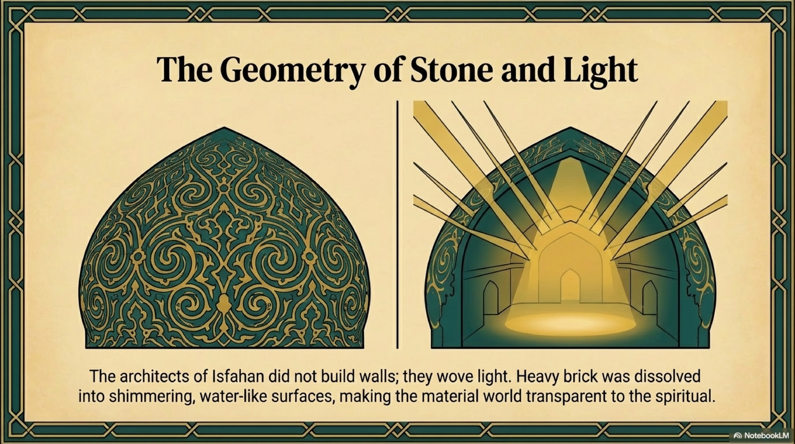

While Ibn Sina was building a cathedral of Logic in the mind, two other giants of the Persian Golden Age were busy measuring the physical foundations of the earth.
Al-Biruni (973–1048) and Omar Khayyam (1048–1131).
In the West, Khayyam is often remembered as a hedonistic poet, a lover of wine and song. This is a massive error of categorization. It is like remembering Isaac Newton primarily for his interest in alchemy. Khayyam was, first and foremost, a mathematician of terrifying precision. Al-Biruni was perhaps the greatest empirical scientist before the Renaissance.
Together, they represent the perfection of The Roots (Level 1) mapped by The Map (Level 4).
They asked a simple question: If the universe is coherent, can we measure it?

Al-Biruni was the anti-speculator. While philosophers were debating the nature of the soul, Biruni was inventing geodesy.
His most famous achievement was calculating the circumference of the Earth. He didn't do it by reading ancient Greek books; he did it by climbing a mountain in modern-day Pakistan, measuring the dip of the horizon, and applying trigonometry. His result was within one percent of the modern value.
This was not just a math problem. It was an act of Calibration.
In our framework, entropy enters a system when the Map deviates from the Territory. When our internal model of the world does not match the external reality, prediction fails, and systems crash.
Al-Biruni was obsessed with Signal Fidelity.
In history, when he wrote his book on India, he pioneered the method of objective, non-judgmental observation. He learned Sanskrit. He quoted Indian sources directly. He tried to reduce the noise of his own cultural bias to zero.
In science, he fiercely criticized Aristotle for relying on logic over observation. He argued that the universe’s coherence must be found, not deduced.
Al-Biruni represents the Scientific Conscience of the Persian Mind. He ensured that the soaring metaphysics of the culture remained anchored in the hard, undeniable data of the physical world.

If Biruni mastered Space, Khayyam mastered Time.
In 1074, the Seljuk Sultan Malik-Shah commissioned Khayyam to reform the calendar. The existing calendars were drifting. The administrative year was falling out of sync with the solar seasons. Entropy was creeping into the state’s timekeeping.
Khayyam’s solution, the Jalali Calendar, is a masterpiece of coherence.
Unlike the Gregorian calendar which we use today, which relies on a complex algorithmic rule of leap years, the Jalali calendar relies on Astronomical Observation. The new year, Nowruz, begins at the exact solar instant of the vernal equinox.
It is the most accurate solar calendar ever devised. The Gregorian calendar accumulates one day of error every 3,300 years. The Jalali calendar accumulates one day of error every 110,000 years.
Khayyam tied the time of the State directly to the time of the Cosmos. He ensured that the civilizational clock was phase-locked with the rotation of the earth around the sun. He built a Temporal Coherence Engine that is still running today in Iran.

But Khayyam the Mathematician had a shadow: Khayyam the Poet.
The Rubaiyat—his collection of quatrains—is not a celebration of wine. It is a cry of existential vertigo. It is the sound of a Level 4 mind that has measured the stars and found them... silent.
Khayyam calculated the orbits. He saw the vast, mechanical precision of the universe. And he realized that this precision did not care about him.
"And that inverted Bowl we call The Sky, Whereunder crawling coop't we live and die, Lift not your hands to It for help—for It As impotently moves as you or I."
This is the Crisis of Logos.
Logic can explain how the universe works, but it cannot explain why. It can map the structure, but it cannot find the meaning. Khayyam looked through the telescope of Reason and saw a cold, deterministic machine. He faced the Nihilism of the Map.
His solution was Radical Presence.
Since we cannot know the future, and the past is gone, and the stars are indifferent, the only locus of coherence is Now.
The "Wine" in his poetry is a symbol for the Liquid Present. It is the solvent that dissolves the anxiety of the future and the regret of the past, allowing the consciousness to rest in the immediate sensation of the moment, Level 3.
Khayyam represents a fracture in the Persian Mind. The synthesis was straining. The brilliance of Reason had led to a spiritual dead end. The map was perfect, but it was empty.
The civilization had mastered the Earth and the Time. But it was starving for the Light.
The Rational Era was ending. The Logic of Avicenna and the Math of Khayyam had built the walls of the fortress. But the fortress needed a window.
It was time for The Imaginal.